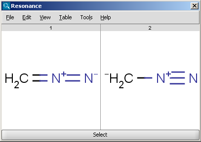

Isomers
Tautomers are organic compounds that are interconvertible by tautomerization.
Tautomerization reaction results in the formal migration of a hydrogen atom or proton,
accompanied by a switch of a single bond and adjacent double bond. Commonly, the
catalysts of these reactions are acids or bases. In solution a chemical equilibrium
of the tautomers will be reached. Some types of tautomers: ketone-enol, amid-imidic
acid, lactam-lactim, enamine-imine.
Tautomers of a compound can be determined with the help of
the Tautomerization plugin. Following options can be adjusted in the
Tautomers Options panel:
-
Calculation:
- All tautomers: calculates all possible tautomers.
- Canonical tautomer: calculates only the canonical tautomer of the
structure.
- Generic tautomer: used for the identification of tautomers in
JChem databases. calculated according to these rules:
- Tautomeric regions are identified.
- All bond types in the tautomeric regions will be changed to ANY.
- Each region will be assigned a data sgroup with Sum(bonding electrons).
- Most stable tautomer: calculates only the energetically most stable tautomer.
- Dominant tautomer distribution: displays the percentage of different tautomers present at the given pH.
-
Max. number of structures: maximizes the number of structures to display.
-
Decimal places: setting the number of decimal places with which
the tautomer distirbution values are given.
-
Set max. allowed length of the tautomerization path: Path length:
sets the number of bonds which are considered by displacing a double bond.
-
Consider pH effect: takes into account the protonation states at given pH.
-
Protect aromaticity: if checked (default), the aromaticity will be maintained.
-
Protect charge: if checked (default), defined charged atoms maintain their charge during calculation.
-
Exclude antiaromatic compounds: if checked (default), any tautomer structure having an
antiaromatic ring system will be discarded.
-
Protect double bond stereo: if checked, all double bonds with stereo information
remain intact. If unchecked (default), tautomer regions will lose the information, any other
stereo information in the molecule is intact.
-
Protect all tetrahedral stereo centers: if checked, stereocenters are not
included in the tautomerization. If unchecked (default), tautomer regions will lose the information, any other
stereo information in the molecule is intact.
-
Protect labeled tetrahedral stereo centers only: if checked, stereocenters
labeled with chiral flag or MDL Enhanced Stereo Represenation flags will
not be included in tautomerization, other stereocenters will.
-
Single fragment mode: if checked (default), the results are displayed in
separate windows, if unchecked, the calculation handles unlinked molecules together and
results are in the same window.
Examples
The following structures are the
calculated tautomers of 4-amino-6-ethoxypyrimidin-2-ol:
| All tautomers |
|
| Canonical tautomer |
|
| Generic tautomer |
|
| Most stable tautomer |
|
| Dominant tautomer distribution |
|
The Resonance plugin generates all resonance structures of a molecule.
The major contributors of the resonance structures can be calculated
separately. Following options can be adjusted in the Resonance Options panel:
-
Max. number of structure: maximize the number of structures to display (decrease calculation time).
-
Take canonical form: display the canonical structure of the molecule.
-
Take major contributors: select the most relevant structures.
-
Single fragment mode : if checked (default), the results are displayed in separate windows, if unchecked, the calculation handles unlinked molecules together and results are in the same window.
For example the two structures below, on the left are the major
resonance contributors of diazomethane, while the structure on the right is the
canonical form:
|  |
 |
The Stereoisomer plugin produces all possible stereoisomers of a
given compound. The plugin handles both tetrahedral and double bond
stereo centers.
-
Generate
- Tetrahedral stereo isomers: only the R/S isomers are generated.
- double bond stereo isomers: only E/Z isomers are generated.
- both: both R/S and E/Z isomers are generated.
-
Generate all stereoisomers: all isomers are generated
-
Generate maximum: only the given number of structures are generated.
-
Filter invalid 3D structures: sterically restricted isomers are discarded.
-
Display in 3D: results are displayed in a 3D viewer.
Results are displayed in a 2D viewer by default:
To replace your drawn molecule in the sketcher with any of the isomers shown, click on the structure then press "Select" at the bottom of the cells (the result window will be closed).
If "Filter invalid 3D structures" option is switched on in the
Stereoisomers Options panel, the stereoisomers can also be displayed in 3D.
References
- Smith, M. B.; March, J. Advanced Organic Chemistry, 5th ed., Wiley Interscience, New York, 2001; pp 1218-1223. ISBN 0471585890